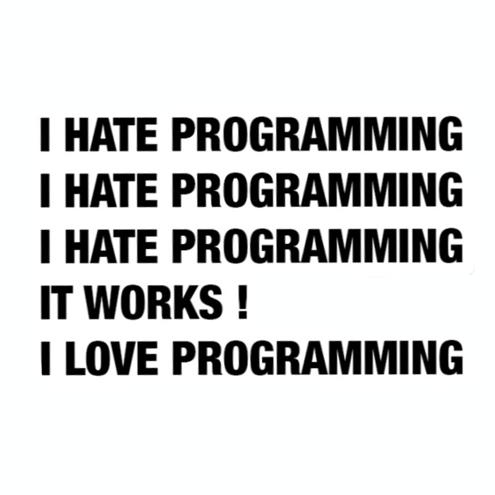

Programming

I got this sticker because I thought it was funny and related to me being an IT major. A lot of my IT friends think it’s really funny because we all feel the same way. Everyone hates programming when their code doesn’t work but once it does we all love it again.